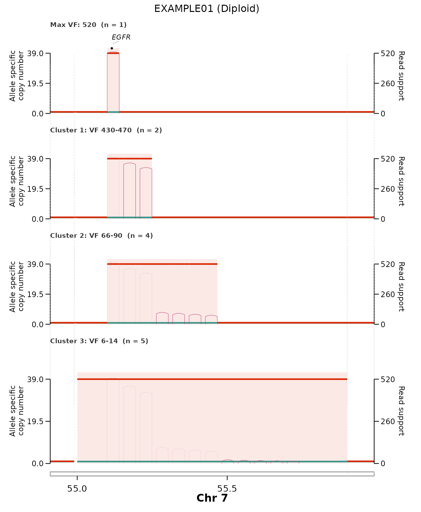

Reconstructing a focal amplicon wave by wave
Source:vignettes/reconstruction.Rmd
reconstruction.Rmdplot_sv_reconstruction() rebuilds a focal amplicon
wave by wave. It stratifies the structural-variant
junctions by read support (VF) and draws one panel per
stratum, from the highest-VF founder
junction down to the lowest-VF late additions — so you can
read the order in which the amplicon was assembled. (Requires the
package.)
The example data
The bundled ex_recon_inputs is a synthetic EGFR amplicon
on chr7 carrying many duplication junctions spanning read support from
VF 6 to 520:
str(ex_recon_inputs$sv_data)
#> 'data.frame': 12 obs. of 10 variables:
#> $ chrom1 : chr "7" "7" "7" "7" ...
#> $ start1 : num 55100000 55154545 55209091 55263636 55318182 ...
#> $ chrom2 : chr "7" "7" "7" "7" ...
#> $ start2 : num 55140000 55194545 55249091 55303636 55358182 ...
#> $ strand1: chr "-" "-" "-" "-" ...
#> $ strand2: chr "+" "+" "+" "+" ...
#> $ svclass: chr "DUP" "DUP" "DUP" "DUP" ...
#> $ VF : num 520 470 430 90 82 74 66 14 11 9 ...
#> $ JCN : num 26 24 22 4 4 4 3 1 1 1 ...
#> $ sample : chr "EXAMPLE01" "EXAMPLE01" "EXAMPLE01" "EXAMPLE01" ...Reconstruction
plot_sv_reconstruction(
sample = "EXAMPLE01",
cnv_data = ex_recon_inputs$cnv_data,
sv_data = ex_recon_inputs$sv_data,
wgd_data = ex_recon_inputs$wgd_data,
chromosome = "chr7"
)
Reading it top to bottom: the first panel isolates the single
highest-VF founder junction (the earliest,
highest-copy event); each subsequent panel folds in the next-lower
VF stratum, and the amplified region grows as later
junctions are added. Read support is shown on the right-hand axis, and
prior (higher-VF) junctions are drawn faintly for
context.
Controls
By default the number of strata is chosen automatically
(k = "auto"). Common adjustments:
-
k— fix the number of read-support strata. -
vf_breaks— explicitVFcut points instead of automatic clustering. -
min_vf— drop low-support junctions before clustering. -
isolate_founder = FALSE— keep the single top junction inside its cluster rather than in its own founder panel.
See ?plot_sv_reconstruction for the full set of
controls, and the get-started vignette for
the copy-number / SV viewer plot_sv_linear().